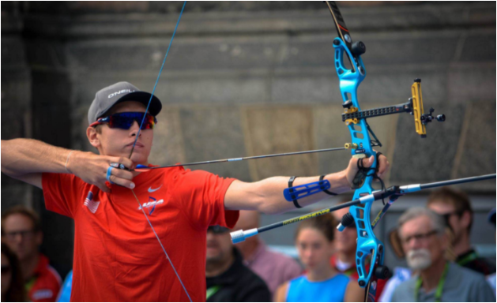

Set-up merupakan gerakan tarikan awal yang dilkukan oleh seorang pemanah sebelum melakukan tarikan (Drawing)
Posisi ini dilakukan oleh pemanah pada saat melakukan tembakan, sikap tersebut harus dilakukan selalu sama atau konsisten, baik posisi kaki maupun posisi tangan, kepala, dan juga posisi kepala selama penembakan berlangsung.
Berikut merupakan langkah-langkah dalam melakukan Set-up :
1.Pemanah berdiri dengan posisi kaki di antara shooting line.
2.Pemanah berdiri rileks memegang busur dengan tangan kiri (pemegang busur).
3.Pemanah mengangkat lengan pemegang busur setinggi bahu.
4.Posisi tangan penarik tali berada lebih tinggi dari bahu pemegang busur.
5.Tangan penarik tali siap untuk menarik tali atau string.